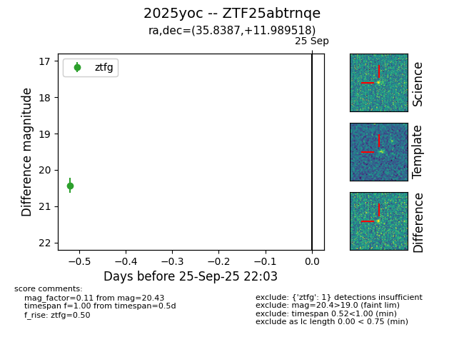

FINK: ZTF25abtrnqe
Lasair: ZTF25abtrnqe
ALeRCE: ZTF25abtrnqe
TNS: 2025yoc
YSE: 2025yoc
ZTF25abtrnqe (ztf,fink)
2025yoc (tns,yse)
equatorial (ra, dec) = (35.8387,+11.98952)
galactic (l, b) = (155.6021,-44.97255)

last ztfg=20.43
1 ztfg detections